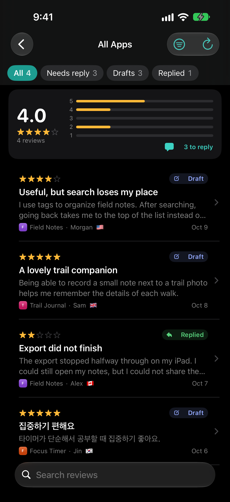

See what needs you.
Browse reviews across your apps. Narrow the list by rating, territory, version or reply status, and pick up where you left off with saved filters and sorting.
For the people behind the apps
Your App Store reviews, together in one private workspace. Find what needs attention and give every reply the care it deserves.
Native on iPhone, iPad & Mac
Take a closer lookComing to the App Store.
ReviewBuddy is not publicly available yet.

01 All your apps, one inbox
02 Every reply stays in your hands
03 A direct connection to Apple
From feedback to follow-through
Browse reviews across your apps. Narrow the list by rating, territory, version or reply status, and pick up where you left off with saved filters and sorting.
Read the original review and your existing response together. Translate incoming feedback on device, save a draft, and keep private notes for your next step.
Write a response in your own voice. With Plus, start from a template or an Apple Intelligence suggestion. Preview the exact reply and approve it before it goes to Apple.
Connect with your own App Store Connect API key. ReviewBuddy talks directly to Apple.
Your key stays in Apple Keychain, with optional connection sync through iCloud Keychain. Drafts and private notes sync through your own private iCloud, so you can start a reply on one device and finish it on another. Reviews are always fetched straight from Apple.
No developer-operated server. No advertising, analytics or tracking.
The essentials, and a little more
The core workflow stays free.
One optional purchase. No subscription.
One unlock for iPhone, iPad and Mac.
Share with your family through Family Sharing.
A live connection needs your own App Store Connect API key and appropriate permissions. Translation needs iOS 18 or macOS 15 or later and supported languages. Apple Intelligence needs a compatible device and an available model.
ReviewBuddy is being prepared for its first App Store release.